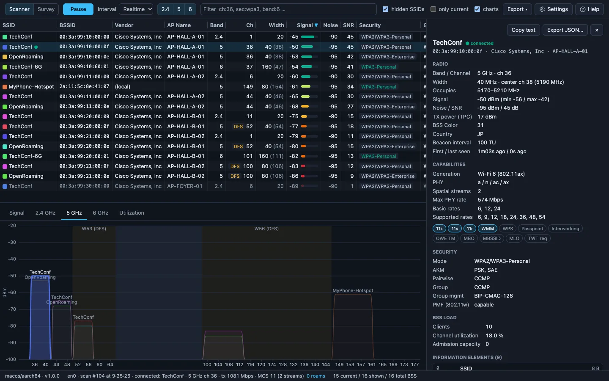
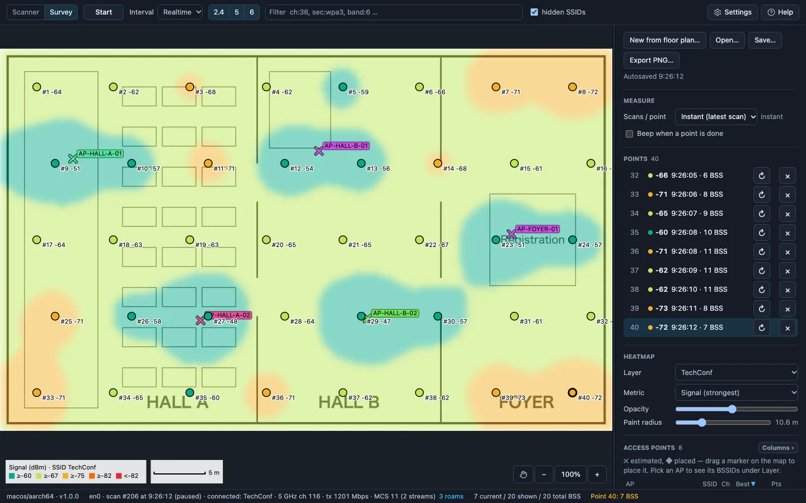
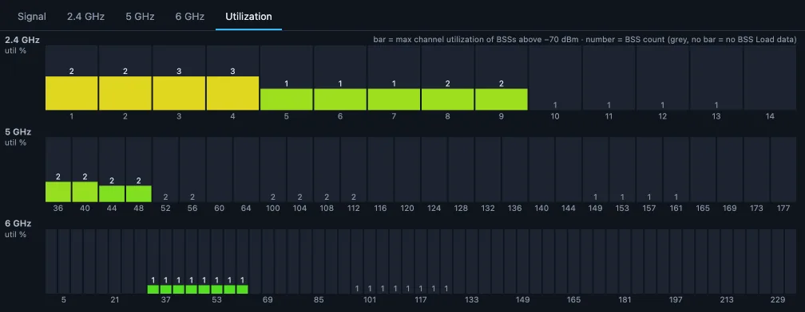
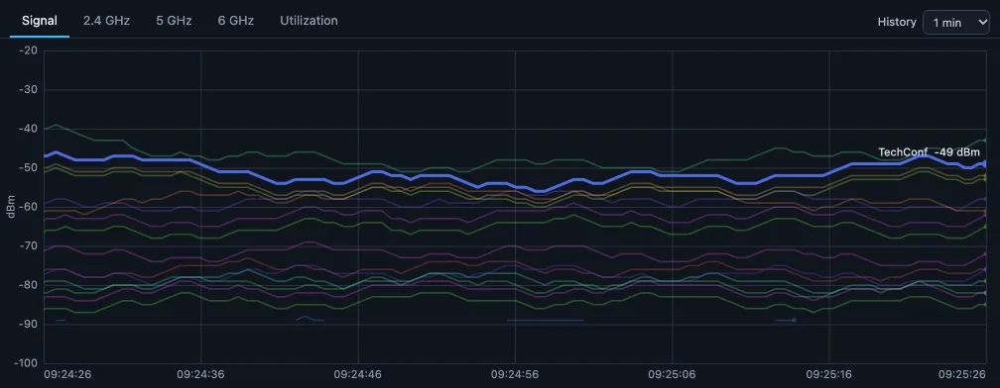
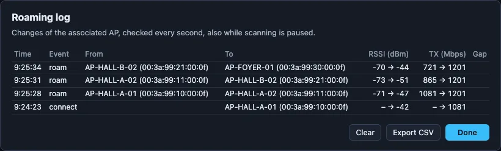

WiFiSight
The Wi-Fi scanner that shows AP hostnames
Made for Wi-Fi site surveys. Pre‑installation surveys, post‑installation checks, and monitoring in operation, all in one.
For macOS, Windows, and Linux. Free to use.

- Every BSS around youSSID, BSSID, vendor, AP hostname, channel and width, RSSI, security, client count, channel utilization, and more, side by side.
- Every IE decodedSelect a BSS to read every information element it sends, with its capabilities and 11k/v/r support.
- Filter and exportNarrow the list with expressions like
band:5 !sec:open, rssi<-75. Export the table as CSV or the whole session as JSON.
Three features that help in the field
AP hostnames, shown as they are
WiFiSight reads the hostname each AP sends in its beacons and shows it in the list. Spot a weak or misbehaving AP on the spot, without matching BSSIDs against the controller. It understands the formats of many enterprise AP vendors.
APs send their hostname only when the controller is set to, such as Aruba's advertise-ap-name.
Let a probe do the measuring
Run wifisight-cli serve on a Raspberry Pi or mini PC and it does the scanning. Leave it somewhere else on site and watch that spot over the LAN.
Or keep it beside you: the probe stays unassociated, so the OS doesn't throttle its scans, every scan runs the same way, and your laptop stays online.
Same analysis on every OS
It runs on macOS, Windows, and Linux. One shared core parses every scan, so the same air gives the same results whichever laptop you brought.
Some fields depend on what the OS reports (differences by OS).
Survey
Open the floor plan and click where you stand to take a measurement. WiFiSight paints the heatmap and estimates where each AP is.

- Four heatmapsStrongest signal, the second-best AP for roaming, co-channel APs, or SNR, per SSID, AP, or BSSID.
- Choose scans per pointRecord the latest scan right away, or scan 1, 3, or 5 times and average them.
- Save and exportSaved as
.survey.jsonto reopen later, or exported as PNG for the report.
Channel utilization
How busy each channel is, from the BSS Load the APs report. The spectrum view draws every BSS at its real width on 2.4, 5, and 6 GHz.

Signal history
Every BSS from the last minute to the last hour. Select one in the list to bring it out.

Roaming
The connected AP is checked every second, even while scanning is paused. Each change is logged with RSSI and data rate before and after.

Command line
wifisight-cli gives the same analysis as a table, JSON, or a JSONL log, and runs the external probe. Builds for Linux on x86_64 and arm64, macOS, and Windows.
$ wifisight-cli scan
SSID BSSID BAND CH CTR WIDTH RSSI SECURITY PHY MAXRATE STA UTIL VENDOR / AP
TechConf 00:3a:99:10:00:00 2.4 1 1 20 -45 WPA2/WPA3-Personal b/g/n/ax 287 12 41% Cisco Systems, Inc / AP-HALL-A-01
TechConf 00:3a:99:10:00:0f 5 36 38 40 -50 WPA2/WPA3-Personal a/n/ac/ax 574 10 18% Cisco Systems, Inc / AP-HALL-A-01
OpenRoaming 00:3a:99:10:00:0e 5 36 38 40 -53 WPA2/WPA3-Enterprise a/n/ac/ax 574 4 18% Cisco Systems, Inc / AP-HALL-A-01
TechConf-6G 00:3a:99:10:60:01 6 37 47 160 -54 WPA3-Personal ax 2402 7 9% Cisco Systems, Inc / AP-HALL-A-01
TechConf 00:3a:99:11:00:0f 5 44 46 40 -65 WPA2/WPA3-Personal a/n/ac/ax 574 21 27% Cisco Systems, Inc / AP-HALL-A-02
HOTEL_GUEST 1c:b1:7f:30:00:03 2.4 1 1 20 -88 Open b/g/n 144 NEC Platforms, Ltd.
$ wifisight-cli watch --interval 5 -o survey.jsonl # log every scan
$ wifisight-cli serve # run as an external probe on :8737Questions
- What kind of tool is it?
- WiFiSight is a free Wi-Fi scanner (Wi-Fi analyzer) and site survey tool in one. It lists nearby access points, decodes every IE, and shows channel utilization, signal history, survey heatmaps, and a roaming log, with the same screens on macOS, Windows, and Linux.
- Is it free?
- Yes. All features are free to use.
- AP hostnames don't show up.
- APs include their hostname in beacons only when the controller or AP is set to advertise it. On Aruba, turn on
advertise-ap-namefor each SSID. - SSIDs or BSSIDs don't show up.
- macOS and Windows 11 24H2 or later need location access. macOS asks on first launch. On Windows, turn on Settings › Privacy & security › Location › "Let desktop apps access your location".
Download
Latest release
macOS
macOS 11 or later, Apple Silicon and Intel
Copy the app to Applications. Allow Location Services when asked: macOS hides SSIDs and BSSIDs without it.
Windows
Windows 10 and 11, x64
The portable version runs without installing, but needs WebView2, which Windows 11 includes.
Linux
Debian, Ubuntu, and derivatives
Install with sudo apt install ./<file>.deb.
First launch
The app isn't code-signed yet, so you'll see a warning the first time.
- macOS: if it's blocked, click Open Anyway in System Settings › Privacy & Security.
- Windows: on the SmartScreen dialog, click More info, then Run anyway.
Differences by OS
What you can get depends on the OS.
| OS | Noise / SNR | TX rate | RX rate | MCS / NSS |
|---|---|---|---|---|
| Linux | ✓1 | ✓ | ✓ | ✓ |
| macOS | ✓ | ✓ | – | ✓2 |
| Windows | – | ✓ | ✓ | – |
1. Only where the driver reports it.
2. Read through a private API, which a future macOS may remove.
TX rate, RX rate, and MCS / NSS describe the current link. On macOS and Windows 11 24H2 or later, the BSSID needs location access. Without it, there is no link to show.